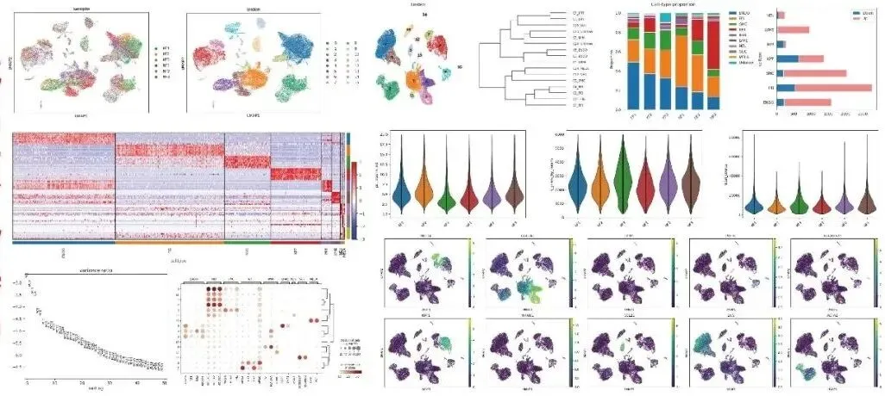
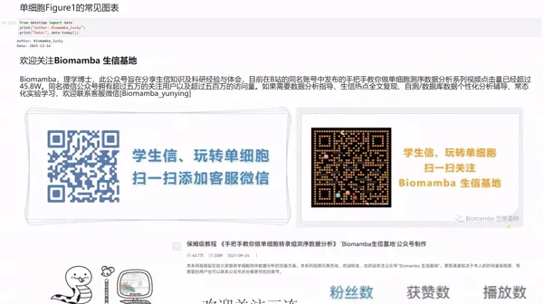
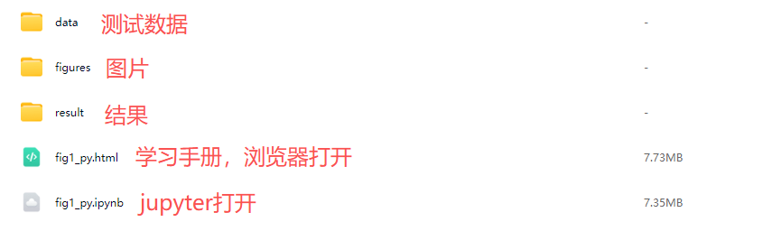

单细胞Figure1的常见图表(Python版)
原文：https://mp.weixin.qq.com/s?__biz=MzAwMzIzOTk5OQ==&mid=2247538071&idx=3&sn=84d7c416ddc32bfd3d1fc740ea0aba9a&chksm=9b3c2cc7ac4ba5d17e438ec0a708f54560138dfe0ba2c39462cd87c3cff57222eb5acd354aa3#rd 合集：单细胞教程全收录

写在前面

 《Single-cell RNA-seq reveals fibroblast heterogeneity and increased mesenchymal fibroblasts in human fibrotic skin diseases》一文中，作者通过使用scRNA-seq探索了皮肤瘢痕中的成纤维细胞异质性，之前我们也推出过完整的原文复现:代码复现| scRNA-seq揭示人纤维化皮肤病中的成纤维细胞异质性与增殖。此前我们也制作了一版基于R语言 的单细胞常见Figure 1 视频教程。这里我们给大家提供基于Python中的scanpy的单细胞常见Figure 1教程，大家可以根据自己的常用编程语言，自由选择顺手的教程。**
**自学有困难的同学不妨看看： 82h视频教程《Python版scRNA-seq分析全流程》、100个小时沉浸式学会scRNA-seq数据分析优惠订阅资料或参与课程请联系客服微信[Biomamba_zhushou]更多生信教程可见： 为什么我们敢开放终身订阅
本教程基于Linux中的jupyter环境演示，计算资源不足的同学可参考：足够支持你完成硕博生涯的共享服务器忘记宣传了，独享用户连技术支持都是独享的RTX5090、4080S、5070显卡上机访问链接：https://biomamba.xiyoucloud.net/
本教程复现集锦
《Single-cell RNA-seq reveals fibroblast heterogeneity and increased mesenchymal fibroblasts in human fibrotic skin diseases》一文中，作者通过使用scRNA-seq探索了皮肤瘢痕中的成纤维细胞异质性，之前我们也推出过完整的原文复现:代码复现| scRNA-seq揭示人纤维化皮肤病中的成纤维细胞异质性与增殖。此前我们也制作了一版基于R语言 的单细胞常见Figure 1 视频教程。这里我们给大家提供基于Python中的scanpy的单细胞常见Figure 1教程，大家可以根据自己的常用编程语言，自由选择顺手的教程。**
**自学有困难的同学不妨看看： 82h视频教程《Python版scRNA-seq分析全流程》、100个小时沉浸式学会scRNA-seq数据分析优惠订阅资料或参与课程请联系客服微信[Biomamba_zhushou]更多生信教程可见： 为什么我们敢开放终身订阅
本教程基于Linux中的jupyter环境演示，计算资源不足的同学可参考：足够支持你完成硕博生涯的共享服务器忘记宣传了，独享用户连技术支持都是独享的RTX5090、4080S、5070显卡上机访问链接：https://biomamba.xiyoucloud.net/
本教程复现集锦

-Biomamba
所见即所得
学习手册以html文件格式提供，可在浏览器中打开并翻阅学习：

** **
教程目录 ：
一、文献解读
1.1背景介绍
1.2 主要内容
（1）scRNA-seq揭示正常瘢痕和纤维性皮肤病真皮组织的细胞异质
（2）瘢痕疙瘩和正常瘢痕中成纤维细胞形成不同的细胞亚群
（3）纤维化皮肤病中间充质成纤维细胞特征的鉴定
（4）成纤维细胞亚群中的配体-受体相互作用分析
（5）间充质成纤维细胞通过POSTN促进瘢痕中胶原蛋白表达
（6）sC4 成纤维细胞比 sC1 成纤维细胞更像间充质细胞
（7）间充质成纤维细胞在硬皮病中增加
1.3 总结讨论
二、准备工作
2.1 数据下载
2.2 数据读入
三、数据处理和可视化
3.1 数据质控及可视化
3.2 细胞分群
3.3 细胞类型注释
3.4 降维图
3.5 小提琴图
3.6 基因表达在降维图展示
3.7 细胞比例展示
3.8 差异基因相关
3.8.1 差异基因计算
3.8.2 差异基因点图
3.8.3 差异基因热图
3.8.4 差异基因热图优化
3.9 火山图
3.10 差异基因富集分析
3.11 每个亚群组间差异基因柱形图
3.12 拼图
3.12.1 第一层
3.12.2 完整fig1
3.12.3 小结
四、软件版本单细胞教程全收录欢迎致谢
文末下载链接中包含以下内容：

测试文件约15.12GB ，大家注意按需下载！
解锁前需阅读：2026订阅须知
提取码联系客服领取：
本推送教程、测试文件下载链接：
https://pan.baidu.com/s/17xALl_DTfJtFy8lQiqZwwg
提取码请联系客服微信获取：